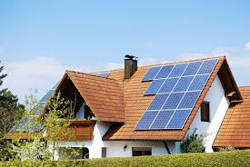

"Impulsando un futuro sostenible con energías renovables"
¿Por qué Energías Renovables?
Las energías renovables son esenciales para un futuro sostenible, ya que permiten reducir las emisiones de gases contaminantes, mitigar el cambio climático y ahorrar costos energéticos a largo plazo. Al ser fuentes inagotables y accesibles, como el sol, el viento y el agua, ofrecen independencia energética y menor vulnerabilidad frente a fluctuaciones de precios de combustibles fósiles. Además, impulsan la innovación, el desarrollo tecnológico y la creación de empleo. En el ámbito rural y agrícola, como en el caso de tu proyecto, las energías renovables son una solución eficiente que mejora la productividad y minimiza el impacto ambiental.

Disponible para vivienda